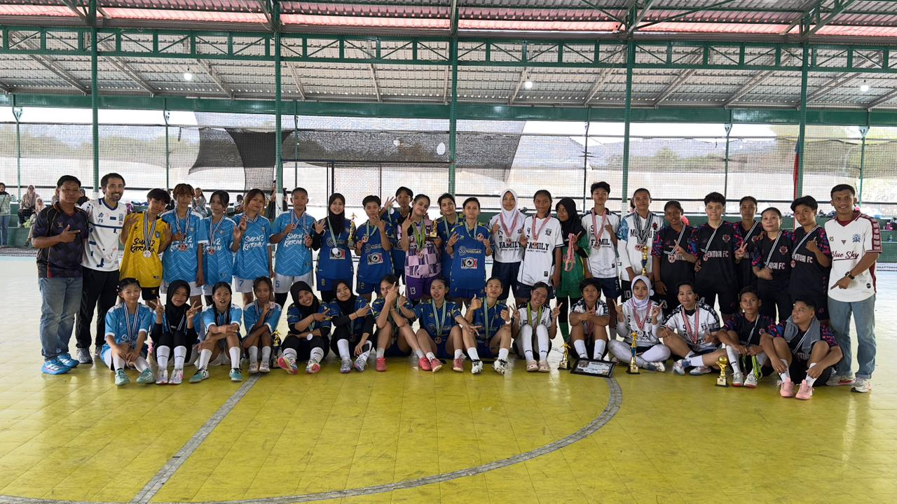
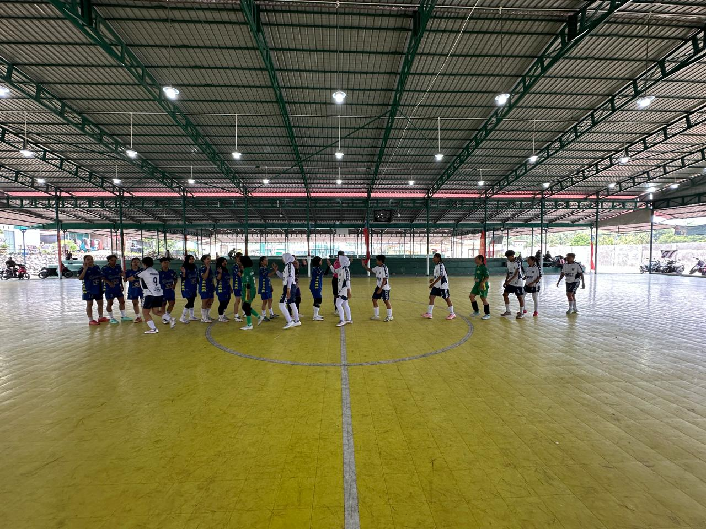
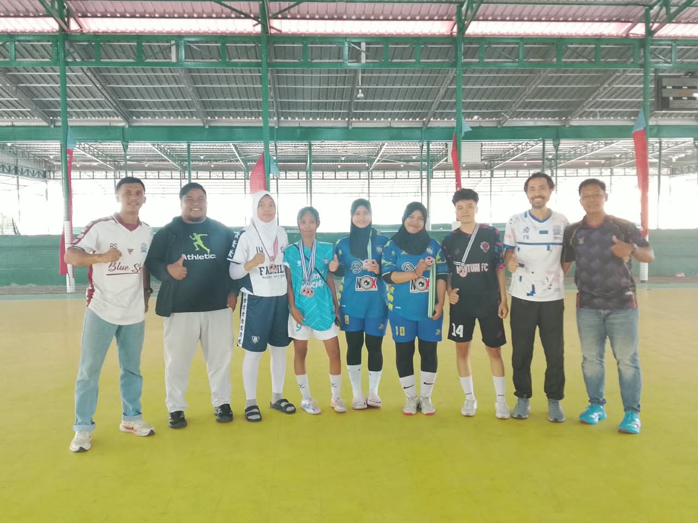

Pertandingan Fourfeo Futsal Putri Antar Kebangsaan berlangsung meriah di Lapangan Futsal Gladiola, Karimun, pada Sabtu (30/8/2026). Turnamen ini diikuti oleh empat tim futsal putri, yaitu KJA FC, Mentuai FC, dan One FC asal Karimun, serta Bluesky FC asal Batam. Kompetisi ini menjadi ajang bagi para atlet perempuan untuk menunjukkan kemampuan terbaik mereka, meningkatkan pengalaman bertanding, serta membangun semangat sportivitas melalui olahraga futsal.
Kegiatan ini menjadi salah satu bentuk dukungan terhadap perkembangan futsal putri, khususnya dalam menciptakan ruang bagi atlet perempuan untuk terus berkembang dan meraih prestasi. Melalui penyelenggaraan Fourfeo Futsal Putri Antar Kebangsaan, para peserta tidak hanya mendapatkan kesempatan untuk berkompetisi, tetapi juga memperkuat kerja sama tim, meningkatkan kemampuan bermain, serta mempererat hubungan antar pemain dari Karimun dan Batam. AFK Karimun berharap kegiatan seperti ini dapat menjadi wadah pembinaan dan motivasi bagi atlet futsal putri agar semakin berkembang di masa mendatang.

